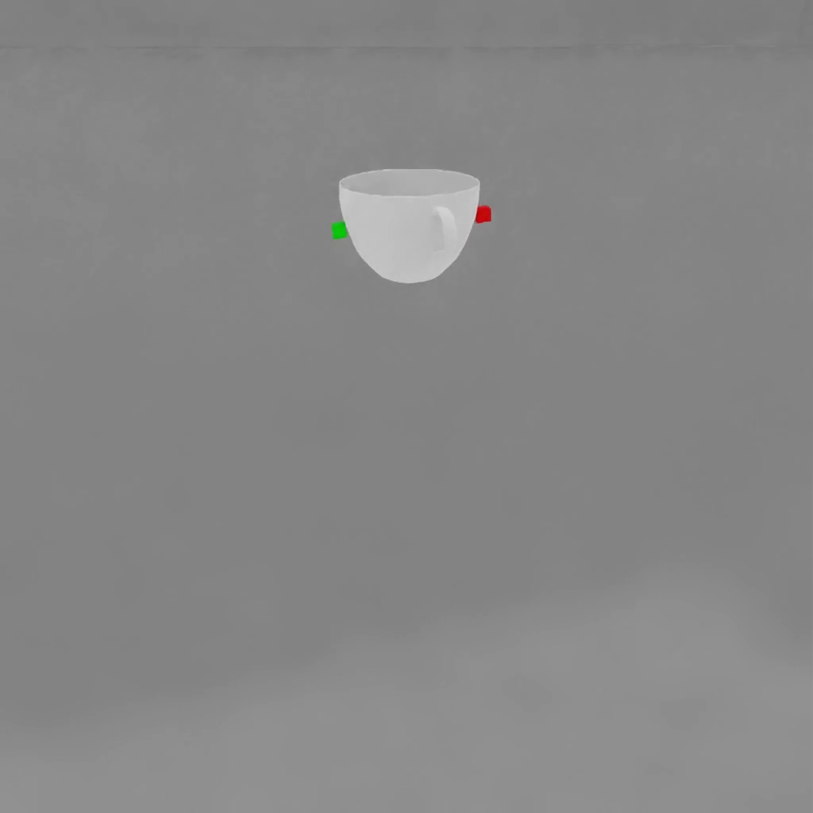

grasp_and_lift (FET005 Grasp)#
Property |
Value |
|---|---|
Test name |
grasp_and_lift |
Feature(s) |
FET005_BASE_NEUTRAL |
Engine |
Kit / Isaac Sim (>=2024.2.0) |
Test version |
1.0.0 |
Summary#
A parallel-jaw gripper positions at each declared grasp identifier on the asset, closes onto it under real gravity, lifts it, holds it through a circular horizontal orbit shake, and releases it cleanly.
What Pass Guarantees#
A reviewer, PM, or OEM can trust that at least one declared grasp point on the asset produces a stable, physically achievable grip in PhysX. An overall pass does not guarantee that every identifier succeeds; the test fails only when all identifiers fail, and partial failures are recorded as warnings in the per-identifier metrics. A passing grasp identifier means the asset’s authored mass and friction are sufficient that gravity does not pull it free during the lift, hold, or shake phases. Any grasp identifier that carries this pass result is usable in a pick-and-place workflow without further manual tuning.
What It Checks#
The test iterates every grasp_identifier_* prim authored on the asset. For each identifier, it runs a fresh simulation scene, positions a standardized parallel-jaw gripper at the identifier pose, and drives the gripper through nine sequential phases. The test confirms that the asset rises when the gripper lifts, remains in the jaws during a static hold and a circular horizontal orbit, and falls freely after the jaws open.
The test skips the asset entirely when no grasp_identifier_* prims are found, because there is no grasp metadata to evaluate. An asset whose physics setup cannot be loaded triggers a precheck failure rather than a per-phase result. If at least one identifier passes all nine phases, the overall test result is a pass; the test fails only when every identifier fails. Partial failures are logged as warnings and recorded in metrics.
Preconditions#
This benchmark depends on FET003_BASE_PHYSX. Grasp behavior is only meaningful once the asset carries a validated PhysX physics setup (PhysX colliders, mass, and a physics scene), so an asset whose validated features do not include FET003_BASE_PHYSX is skipped rather than failed. When an asset is run with no workspace validation record, for example an external asset or a forced run through --features, the dependency cannot be checked and the benchmark proceeds.
How It Works#
The nine phases run in order, stopping at the first failure within each identifier:
The Stability phase places the asset with its bounding-box bottom just above the ground plane and allows it to settle under gravity (9.81 m/s²). The phase waits up to 3.0 s for the asset centroid to remain still within a 0.002 m rest tolerance for 1.0 s. If the timeout expires before rest is detected, the phase proceeds anyway; it never blocks progress.
The GripperPositioning phase moves the gripper gantry to the grasp midpoint. The phase waits until the gantry converges within 5 mm of the target or 2.0 s elapses, whichever comes first. A timeout here fails the identifier.
The Grasping phase closes the gripper smoothly over 0.5 s. After the close ramp completes, the jaws hold the commanded position for an additional 0.3 s so the PD-driven joints can physically converge against the asset before lifting begins. If the pads meet each other, meaning the asset is absent or too small to intercept them, the phase fails.
The Lifting phase raises the gantry over 1.0 s to a target height computed as the larger of 0.3 m and two times the longest edge of the asset bounding box. The phase passes when the asset centroid has risen at least 0.02 m from its position at lift start.
The HoldBeforeShake phase holds the gripper position for 1.0 s. The phase fails if the asset centroid drops more than 0.10 m from its position at hold start, or if the asset centroid sinks to within 0.02 m of the ground plane.
The Shake phase moves the gantry in a circular horizontal orbit at 2.0 Hz with a 0.01 m radius for 1.5 s. The phase fails only if the asset bounding-box bottom descends to 0.02 m below the ground plane during the oscillation. Unlike the Hold phases, which monitor the centroid, the Shake phase monitors the bounding-box bottom, so a tall object rotating in the jaws is not penalized for its centroid drifting downward. An asset that rotates or shifts slightly in the jaws without hitting the floor is treated as a pass, because small in-grip motion does not constitute a genuine drop.
The HoldAfterShake phase holds the gripper position again for 1.0 s under the same drop and floor-contact criteria as HoldBeforeShake.
The Opening phase opens the gripper over 0.5 s. This phase never fails; it records whether the asset moved when released.
The Dropping phase waits up to 3.0 s after release for the asset centroid to fall by at least the larger of 0.05 m and the asset bounding-box height. A fall of this magnitude confirms the gripper genuinely held the asset and that the asset is now free under gravity.
Collision geometry is run exactly as authored, matching Isaac Sim behavior. PhysX applies its own convex-hull fallback for dynamic triangle-mesh colliders at runtime.
Failure Cases#
Symptom |
Likely cause |
|---|---|
GripperPositioning timeout: gripper cannot reach the target within 2.0 s |
The grasp identifier pose is inaccessible to the gantry, or the identifier path does not point at a graspable surface |
Grasping fails: pads touched (no object) |
The asset has no collision mesh at the grasp location, or the identifier targets empty space beside the asset |
Lifting fails: object did not rise |
Low friction or zero mass prevents the gripper from holding the asset against gravity; the asset slides out of the jaws as the gantry rises |
HoldBeforeShake or HoldAfterShake fails: object dropped |
The asset mass or friction is too low to sustain a 1.0 s static hold in the jaws |
Shake fails: object reached the floor during shaking |
The grip is too weak for even a 0.01 m circular orbit perturbation; friction or mass needs to increase |
Dropping fails: object did not fall after release |
The asset is constrained in the scene or the physics configuration prevents free fall after the jaws open |
How to Fix#
If the gripper cannot converge on a grasp identifier, inspect the identifier prim path and pose to confirm it targets a surface on the asset rather than empty space or an interior point.
If grasping reports that the pads touched with no object, the asset is missing a collision mesh at the grasped region. Add or extend the collision approximation to cover the surfaces the pads are expected to contact.
If lifting or holding fails, check physxRigidBody:mass and physxRigidBody:diagonalInertia on the asset. A zero or NaN mass means PhysX cannot compute the dynamics. Also check physxMaterial:dynamicFriction and physxMaterial:staticFriction: low dynamic and static friction can prevent the gripper from holding the asset against gravity; increase both if the asset slips out of the grip.
If the shake phase fails, the same friction and mass remedies apply. Review the captured video: an asset that shoots sideways when the pads make first contact usually has misconfigured contact depth rather than low friction.
If an identifier is intentionally not graspable (for example, a side face that the asset author included but does not expect a gripper to use), remove that identifier from the asset rather than tuning physics to make it pass.
Expected Result#

For each grasp identifier on the asset, the parallel-jaw gripper moves to the identifier pose, closes around the asset, lifts it cleanly off the floor, holds it in mid-air, moves in a circular horizontal orbit, then opens to release. The asset follows the gripper lift motion without sliding out. An asset that slips during the lift or shake phase fails that grasp identifier.
Notes and Caveats#
The Shake phase treats an asset that rotates or shifts in the jaws as a pass. Only a genuine floor contact during oscillation fails the phase. This prevents false negatives on tall or asymmetric assets whose bounding-box centroid can swing up to several centimeters while the object remains firmly held near one end.
The Dropping phase does not check for ground penetration. Small objects can settle with their centroid at or slightly below Z = 0 due to PhysX contact tolerances, and that is not a failure of the grasp test. Ground penetration is evaluated separately by the FET003 Physics family.
A 0.3 s settle window (close_settle_seconds) is enforced after the close ramp before lifting begins. This allows the PD-driven gripper joints to physically converge against the asset. Without the settle window, tightly fitted or round assets can slip out when the lift command begins while the jaws are still moving.
Collision meshes are run exactly as authored, consistent with Isaac Sim behavior. PhysX might emit a convex-hull fallback diagnostic in the kit logs for dynamic triangle-mesh colliders; this is expected and does not affect the test outcome.